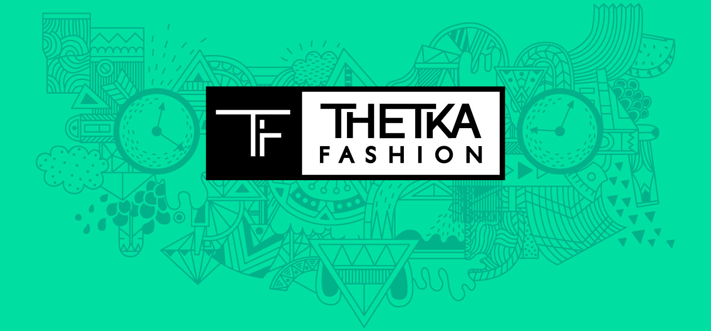
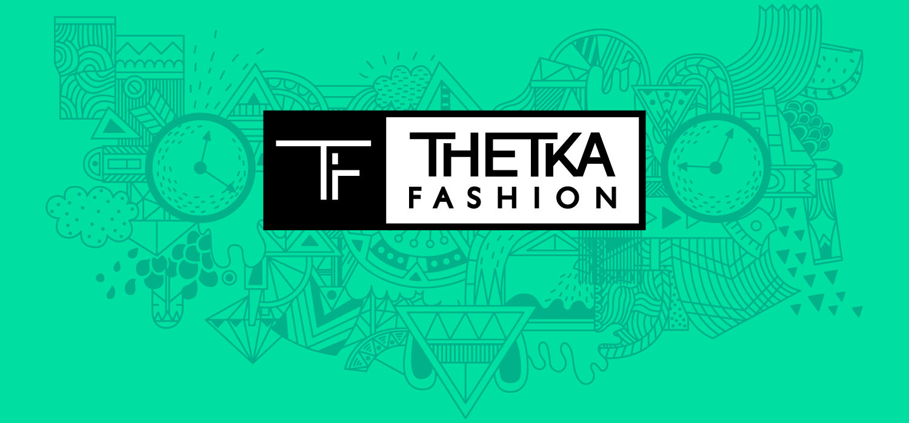

Thetka Fashion is a fashion brand my business partner Jelena and I started in Belgrade 2015. Jelena was a seamstress and wanted to start selling unique and hand-made clothes so I joined in as a designer. I did all the branding, marketing, photo-retouching, and painting on clothes and buttons that she sewed.
The clothes were unique and one of a kind. Each one was different; hoodie/jackets had wooden hand-painted buttons made specialy for those jackets. Some of the jackets had fabrics from Hobby Lobby that I designed, while others I drew on what was ordered or imagined. The shirts were printed with my illustrations, or I drew on them to test the market and see if it was worth printing on. It was a fun experience and great business even though we no longer do business due to my bussy schedule.
We sold in Mikser House Belgrade, KC Grad, and on some other festivals


 
